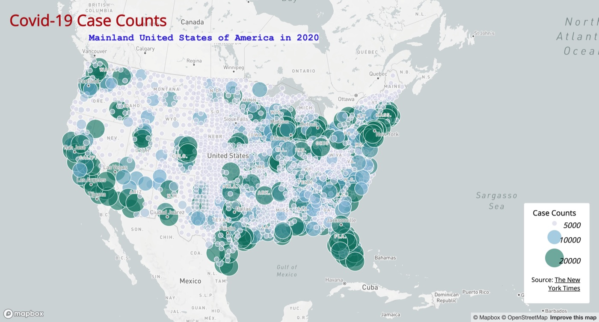
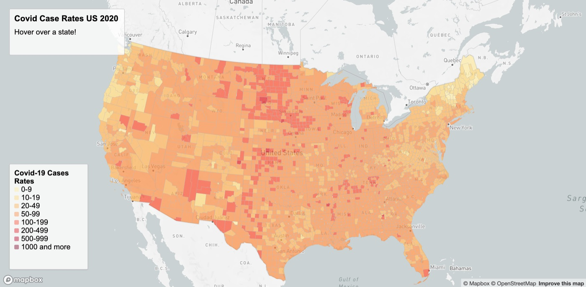
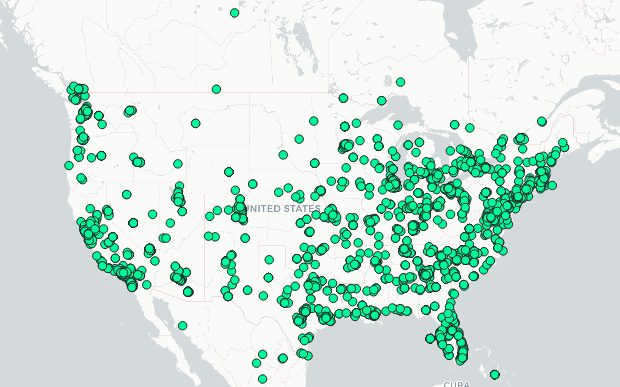
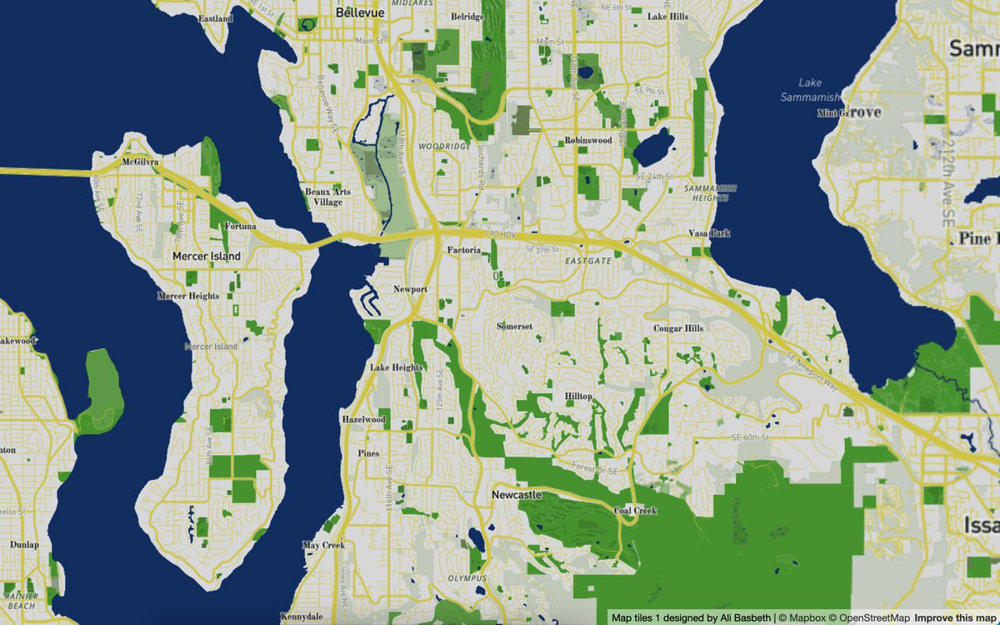
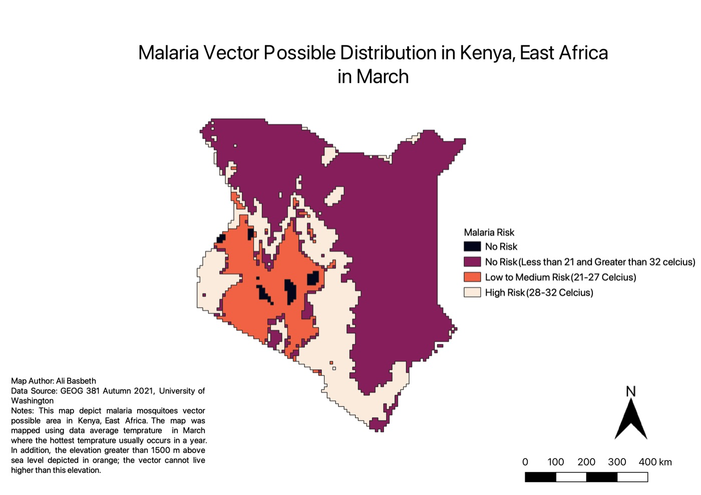

About Me
I earned my B.A. in Geography from the University of Washington with a focus on GIS and data science. I then spent three years as a LiDAR analyst at a surveying firm in Bellevue, working with large geospatial datasets for utility infrastructure projects. Much of that work centered on data quality, and I helped improve our QA/QC process by standardizing reviews, automating repetitive tasks, and catching errors earlier.
I am now pursuing an M.S. in Information Systems at the University of Washington Foster School of Business, where I am building skills in SQL, Python, cloud technologies, BI tools, and AI. I am interested in data analytics, BI engineering, and data engineering roles, particularly in the technology industry. I am focusing my search on the Seattle area, the San Francisco Bay Area, Los Angeles and Orange County, and New York City.
Academic Background
Featured Projects
Selected coursework from my geography degree at the University of Washington, covering web mapping, spatial analysis, and cartography.


COVID-19 US Web Mapping Application
Two interactive web maps of 2020 COVID-19 cases by US county: a proportional-symbol map of case counts and a choropleth of rates per 100,000 residents, built with Mapbox GL JS from New York Times and US Census data.

Geo-Tagged Tweet Analysis
Tweets collected through the Twitter API in two windows, early morning and afternoon, then compared: maps show where people tweeted across the contiguous US, and word clouds show what they tweeted about.

Custom Basemap & Map Tile Design
Four basemaps designed in Mapbox Studio and published as raster map tiles, including a Washington broadband speed-test map and a wetlands and parks map around Bellevue, all viewable in one Mapbox GL JS web map.

Malaria Risk Mapping (QGIS)
Risk map of where malaria-carrying mosquitoes could survive in Kenya, classified by average March temperatures and excluding land above 1,500 meters, where the mosquito cannot live.
Desktop GIS project — source project file isn't in a public repo yet.
More projects are on the way. In the meantime, the full list is at github.com/LostGovernment.
Professional Experience
- QA/QC workflow design: engineered standardized QA/QC workflows and protocols across diverse geospatial datasets, achieving 100% QC accuracy and cutting review time by 50% across 250GB+ of weekly deliverables.
- Documentation and reporting: wrote process documentation with the team and managed QC reporting, summarizing key failures for project managers and tracking corrective actions through to delivery.
- Workflow automation: developed Python scripts and MicroStation macros that automated repetitive tasks and reduced manual effort on long-term client projects.
- Client deliverables: prepared client-ready deliverables and QC reports, coordinated data deliveries through Google Cloud, and tracked project status on Monday.com.
- Training and mentorship: trained and mentored new hires in QA/QC workflows, improving the consistency of technician QC results.
- LiDAR & GIS
- MicroStation (TerraSolid), QGIS
- Automation
- Python
- Reporting & delivery
- Excel, Google Cloud, Monday.com
- Managed parking operations and facility access control for 30+ events, including crowds of 60,000+.
Leadership
- Represent the MSIS program to prospective students, sharing firsthand perspective on the curriculum and student community and answering their questions as they consider applying.